设置与外观
设置是作用于整个 LemmaLoom 应用的选项，包括主题、界面语言、转录模型、你自己的排除模式、阅读器的显示方式，以及四个透镜的颜色和样式。
单个文档的语言、文档的透镜和文档中排除的文本则不在此列。
设置窗口
要打开设置，请选取 LemmaLoom ▸ 设置…，也可以按 ⌘, 键。
设置窗口左侧的边栏列出三个面板：通用（齿轮图标）、阅读器（书本图标）和透镜（方形上叠一个圆形的图标）。LemmaLoom 每次启动后第一次打开设置时，显示的是通用面板。
| 面板 | 部分 | 设置内容 |
|---|---|---|
| 通用 | 外观、语言、转录、排除预设 | 主题、界面语言、语音识别模型，以及你自己设定的、让分析跳过某些文本的模式 |
| 阅读器 | 排印、页面、选择、预览 | 阅读器的字体、文字大小和版式，文本旁边的段落编号和句子编号，以及选区和音频播放的显示方式 |
| 透镜 | 词类、语法功能、短语、形态学 | 这四个透镜中每个标注项的颜色和样式 |
你对设置所做的更改会立即在设置窗口和所有打开的文档中生效。界面语言是例外，要到下次启动 LemmaLoom 时才生效。
面板较大时，例如透镜面板，可以拖动窗口边缘调整窗口大小，腾出更多空间。面板比窗口高时，超出的部分可以滚动查看。
设置的更改会立即生效（见第 23 章“撤销与重做”）。要撤回一项更改，请重新选择它原来的值，或者点按重置按钮，例如阅读器和透镜面板顶部的全部重置为默认。对于其他设置，本章都给出了默认值。
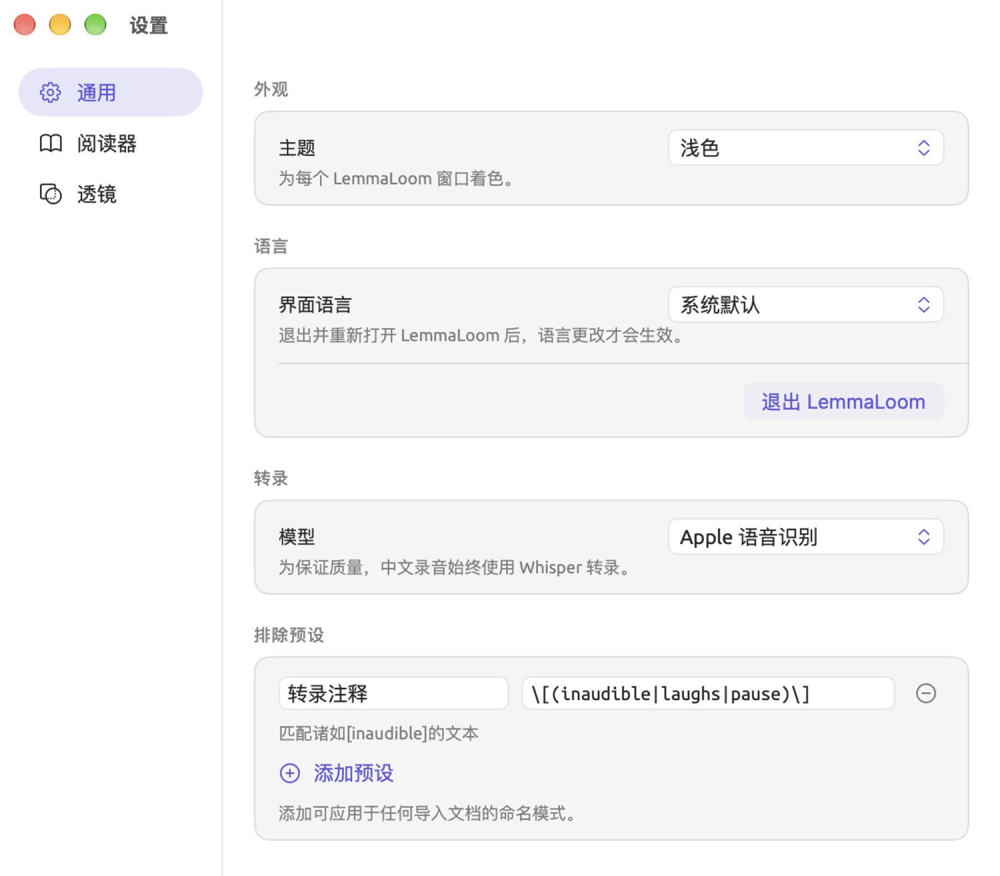
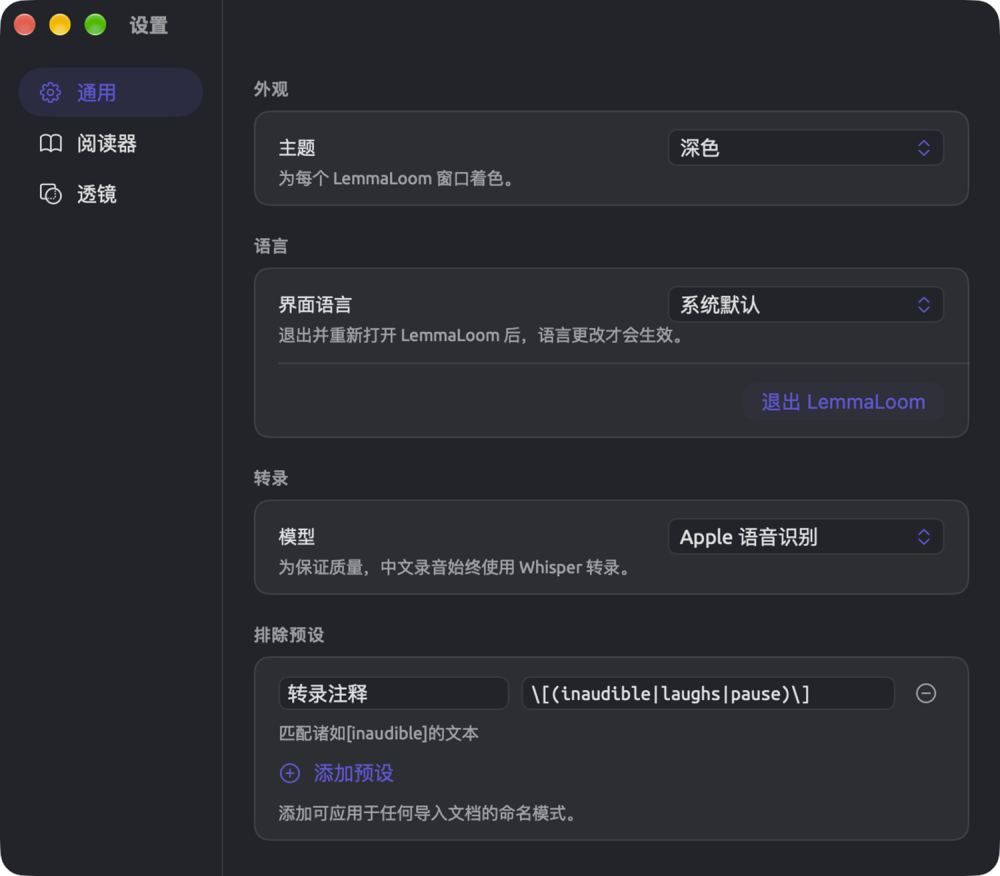
主题
主题是整个应用界面所用的一套颜色。主题决定窗口是浅色还是深色、窗口各栏和侧边面板的颜色、阅读器的背景色和文字颜色，以及其他许多地方的颜色。强调色同样由主题决定，它是当前选中或启用的项目所用的颜色，例如设置边栏中选中的面板，或者处于打开状态的随音频滚动按钮。
LemmaLoom 提供十一个主题：
| 主题 | 浅色或深色 | 配色 |
|---|---|---|
| 系统 | 跟随 macOS | macOS 的标准颜色，浅色或深色取决于 macOS 的设置 |
| 浅色 | 浅色 | macOS 的标准浅色配色，macOS 为深色时也不变 |
| 深色 | 深色 | macOS 的标准深色配色，macOS 为浅色时也不变 |
| 奶油色 | 浅色 | 暖调米白底上的深棕色文字，棕色强调色 |
| Solarized 浅色 | 浅色 | 淡奶油色底上的灰蓝色文字，米色的栏，蓝色强调色 |
| Solarized 深色 | 深色 | 深蓝绿色底上的淡灰色文字，蓝色强调色 |
| 高对比度 | 浅色 | 白底黑字，黑色分隔线，深蓝色强调色 |
| 高对比度深色 | 深色 | 黑底白字，白色分隔线，黄色强调色 |
| 红色盲 | 跟随 macOS | macOS 的标准颜色，透镜和编码的颜色针对红色盲调整，蓝色强调色 |
| 绿色盲 | 跟随 macOS | macOS 的标准颜色，透镜和编码的颜色针对绿色盲调整，蓝色强调色 |
| 蓝色盲 | 跟随 macOS | macOS 的标准颜色，透镜和编码的颜色针对蓝色盲调整，橙红色强调色 |
初始主题是系统。它随 macOS 的模式在浅色和深色之间自动切换，macOS 的外观设为自动时也是如此。
系统、浅色和深色使用 macOS 为 LemmaLoom 提供的强调色。这个颜色默认是紫蓝色，但可能因你在系统设置 ▸ 外观中的设置而不同。其他主题始终使用各自的强调色。
更改主题的步骤如下：
- 选取 LemmaLoom ▸ 设置…（⌘,），然后点按通用。
- 在外观下打开主题菜单。
- 选择一个主题。
所有窗口会同时改变，设置窗口也不例外。
投影仪容易把浅淡的颜色投得发白。在投影仪上显示时选择高对比度，面板、列表和分隔线仍然清晰可见，阅读器的显示则与浅色相同。
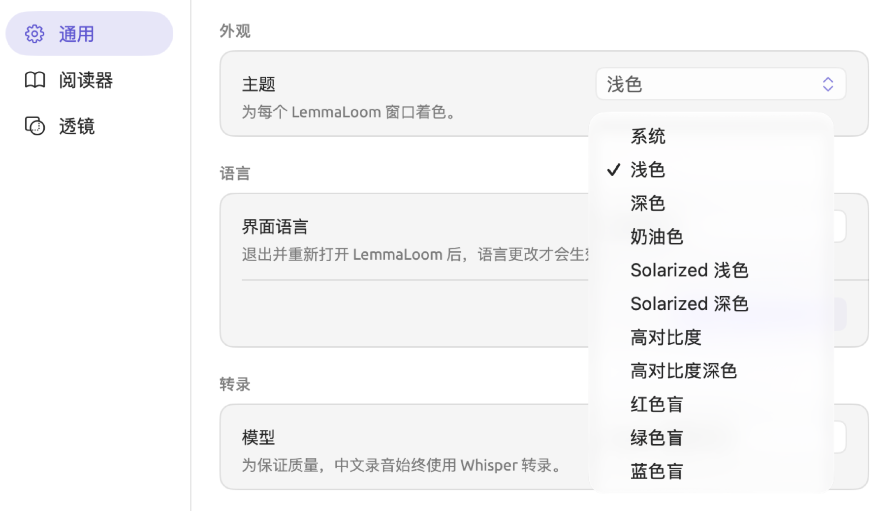
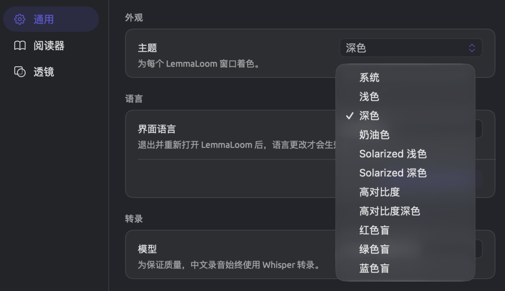
主题改变哪些地方
在每个 LemmaLoom 窗口（包括术语表和分析器窗口）中，主题都会改变以下元素的外观：
- 由 macOS 绘制的元素，例如滚动条和文本框，随主题呈浅色或深色，与 macOS 的设置无关。
- 窗口的背景和顶部的横条采用当前主题的栏颜色。使用奶油色、Solarized 浅色和Solarized 深色时，这些颜色从上到下逐渐过渡。
- 阅读器的背景色和文字颜色跟随主题，具体见第 5 章“阅读与编辑”中的阅读器颜色。在阅读器中，高对比度与浅色相同，高对比度深色与深色相同。
- 文本框中选中文字的高亮和插入点采用主题的强调色；在系统、浅色和深色中，则采用 macOS 的选区颜色。
- 在五个自带配色的主题中，表格的表头采用栏颜色，表头的线条采用主题的分隔线颜色，各行背景在两种色调之间交替。
- 对话框（包括文档信息和导入文档）采用当前主题的背景色和文字颜色。
- 窗口 ▸ 分析器中的代码编辑器随当前主题切换浅色或深色配色。
- 全屏幕时，屏幕顶部的工具栏采用当前主题的栏颜色。
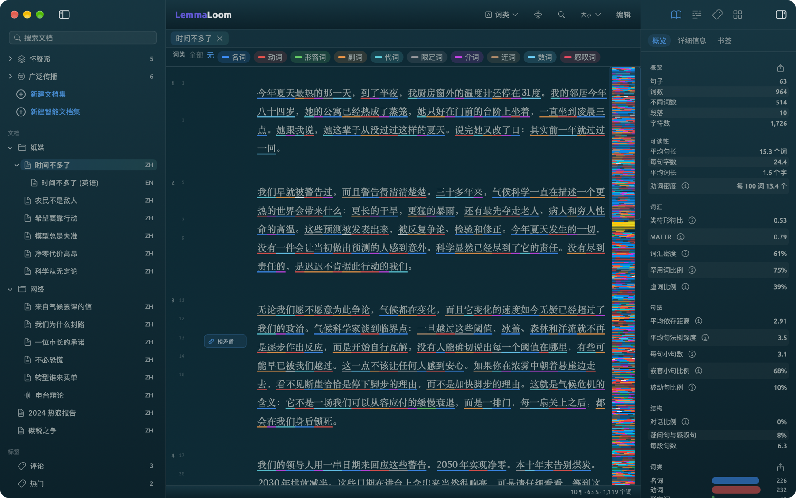

不随主题改变的颜色
除红色盲、绿色盲和蓝色盲主题会为显示调整编码和词典类别的颜色外，编码和词典类别在每个主题中都保持各自的颜色。你在透镜面板中改过颜色的透镜标注项也是如此。
透镜标注项的默认颜色来自 macOS，是 macOS 的标准颜色，在深色主题中会稍微调亮一些。你为标注项选定颜色之后（无论是换了一种颜色，还是选了它原来的颜色），这个颜色就固定不变。在透镜面板中重置这个标注项的颜色后，它才会重新随主题调整。
在浅色和深色主题之间切换时，请检查你自己的颜色在两种主题下是否都清晰可读。例如，一种淡黄色在 Solarized 深色的背景上清晰可读，到了高对比度的纯白背景上却几乎看不见。
界面语言
LemmaLoom 的菜单、窗口和提示信息可以用英语、德语或中国大陆简体中文显示。初始设置是系统默认，由系统根据系统设置 ▸ 通用 ▸ 语言与地区中列出的优先顺序决定使用哪一种。如果这个列表中没有这三种语言，LemmaLoom 就使用英语。
要单独为 LemmaLoom 选择界面语言，请按以下步骤操作：
- 选取 LemmaLoom ▸ 设置…（⌘,），然后点按通用。
- 在语言下打开界面语言菜单，选择 English、Deutsch 或简体中文。选择系统默认则重新跟随 macOS。
- 点按退出 LemmaLoom。它上方的提示写着退出并重新打开 LemmaLoom 后，语言更改才会生效。
- 重新打开 LemmaLoom。
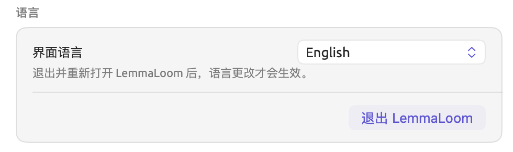
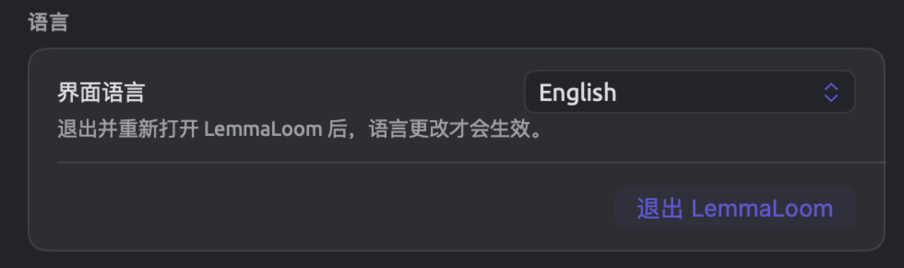
每种语言都以它自己的名称列出。
界面语言是菜单、标签文字、提示信息、透镜及其标注项的名称、术语表，以及阅读器面板预览中的示例文本所用的语言。每个文档都按它本身的语言建立索引，所以即使界面语言设为英语，“气候辩论”中的中文文档仍然按中文建立索引。LemmaLoom 如何确定每个文档的语言，见第 21 章“分析与索引”中的LemmaLoom 如何确定语言。
如果在这个菜单中选择了一种界面语言，翻译对话框还会首先建议把文档译成这种语言。例如，选择 English 时，它会建议把中文评论文章“净零代价高昂”译成英语（见第 9 章“译文与分屏浏览”中的“翻译”对话框）。
示例项目的语言也由界面语言决定。选取文件 ▸ 导入 ▸ 示例项目时，英语界面下导入的是“Climate Debate”，德语界面下是“Klimadebatte”，中文界面下是“气候辩论”（见第 1 章“简介”中的示例项目）。之前已经导入 LemmaLoom 的副本保留原来的语言。
转录模型
导入音频或视频文件后，LemmaLoom 会用语音识别模型自动转录其中的语音（见第 4 章“导入资料”中的转录的工作方式）。可以在转录下的模型菜单中选择使用哪个模型：
| 模型 | 说明 |
|---|---|
| Apple 语音识别 | 初始设置，速度最快 |
| Whisper Large v3 Turbo | 两个 Whisper 模型中较快的一个 |
| Whisper Large v3 | 较慢，处理难以听清的录音时有时略准确一些 |
中文录音即使选择了 Apple 语音识别，也会使用 Whisper 转写，因为 Whisper 转写中文的质量更好。
更换模型只影响之后导入的录音。要检验换一个模型能否改善结果，可以截取一小段难以听清的音频，用两个模型各导入一次，再并排比较两份转写文本。
排除预设
导入文档时，或者修改文档的文档信息时，你可以让 LemmaLoom 忽略符合某些模式的文本，使语法分析完全不处理这些文本。这类模式可以是时间戳、说话人标签以及许多其他形式的文本（见第 4 章“导入资料”中的从索引中排除文本）。这些模式用正则表达式表示。正则表达式是对某一类文本的简洁描述，例如“方括号中的任意一个词”。输入模式的栏旁边有一个预设菜单，其中有五个默认预设。
排除预设是你自己定义的模式，有自己的名称，保存在上面提到的预设菜单中。
假设你有几份电台对话的人工转写稿，其中的停顿、笑声和听不清的话分别记作 [pause]、[laughs] 和 [inaudible]（这些注释应当留在文本中，但并不是实际说出的话）。你可以按以下步骤为这三种注释建立排除预设。
- 选取 LemmaLoom ▸ 设置…（⌘,），然后点按通用。
- 在排除预设下点按添加预设。这时会出现新的一行，其中有两个空白栏。
- 在名称栏中输入
转录注释。预设菜单中显示的就是这个名称。 - 在模式栏中输入
\[(inaudible|laughs|pause)\]。
栏下方的一行说明输入的正则表达式能匹配什么，例如匹配诸如[inaudible]的文本。如果 LemmaLoom 无法根据这个正则表达式生成一段能被它匹配的示例文本，这一行会显示有效模式。无效模式含有语法错误，例如括号不成对。遇到无效模式时，这一行会以红色字体显示无效模式。
反斜杠让方括号按字面匹配，竖线则在圆括号组内分隔各个备选项。在圆括号内加上 |crosstalk，就能同时匹配 [crosstalk]。这个模式区分大小写，因此只匹配小写的 [laughs]。
预设会在你输入时自动保存。它会出现在导入对话框（导入文档，网页则是从网页导入）和文档信息的预设菜单中，紧接在五个默认预设之后，两组之间有一条分隔线。


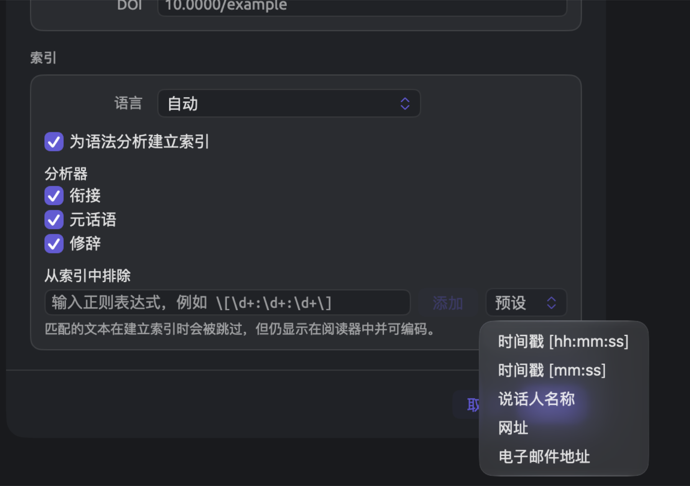
预设的名称和模式都填好后，预设菜单中就会添加一项。如果名称或模式还空着，这一项只留在设置中，直到你把它填完或删除。
从预设菜单中选取预设时，它的模式会复制到文档中。模式已经复制到文档中的预设，在预设菜单中不可用。要更改这些模式，需要在每个文档的文档信息中分别编辑。
选取模式无效的预设，会导致整个文档都建立索引。选取预设之前，请先查看模式下方的那一行。
要删除预设，请点按它旁边的小减号按钮（移除预设）。这一项会立即消失。
阅读器面板
阅读器面板控制阅读器如何呈现文本。面板的前两个部分是排印和页面，其中的选项与阅读器标题栏中的字体、边栏与文字大小菜单相同（见第 5 章“阅读与编辑”中的标题栏）。显示 ▸ 增大文字（⌘+）、减小文字（⌘-）和重置文字大小（⌘0）这几个命令调整的也是同一个文字大小，在一处更改，其他几处也会随之改变。
| 部分 | 行 | 选项 | 初始值 |
|---|---|---|---|
| 排印 | 字体 | System Serif、System Sans、System Rounded、System Mono、Georgia、Palatino、Baskerville、Times New Roman、Helvetica Neue、Avenir Next、Menlo | System Serif |
| 排印 | 文字大小 | 从 70% 到 200% 的滑块，每级 10% | 100% |
| 页面 | 版式 | 单栏、双页跨页 | 单栏 |
| 页面 | 页边编号 | 关闭、段落、句子、两者 | 两者 |
页边栏是文本左侧的一栏，阅读器在这里为文档的段落和句子编号（见第 5 章“阅读与编辑”中的页边栏）。文字大小百分比旁边的弯箭头图标是重置，它把文字恢复为默认的 100%。文字大小为 100% 时，弯箭头不可用，将鼠标指针悬停在上面会显示已是默认值。关于字体、文字大小、版式和页边编号，详见第 5 章“阅读与编辑”中的更改文本的呈现方式。
点按面板顶部的全部重置为默认，可以一次把面板中的所有行恢复为初始值。
选择
选择部分决定阅读器如何显示你选中的内容，以及如何处理选区周围的其余文本。
| 行 | 选项 | 显示效果 |
|---|---|---|
| 所选文本 | 实心块 | 文字颜色的圆角色块，所选的词改用背景色显示 |
| 高亮 | 所选的词后面衬一层浅色 | |
| 中心词和依存词 | 弧线 | 从所选的词分别连到它的中心词和每个依存词的曲线，依存词一端带有小箭头 |
| 连线 | 同样的连接，画成文本上方的方括号 | |
| 标签 | 在每个相关的词上方显示关系的名称 | |
| 高亮 | 中心词加黄色底色，依存词加淡紫色底色 | |
| 关闭 | 只显示选区本身 | |
| 周围文本 | 淡化 | 包含选区的句子之外，文档的其余部分都变暗 |
| 轻度淡化 | 同上，但变暗的程度较轻 | |
| 高亮句子 | 所选的词所在的句子加上底色 | |
| 关闭 | 整个文档照常显示 | |
| 音频播放 | 聚光 | 除正在播放的段落外，其余全部变暗 |
| 实心块 | 正在播放的段落衬在强调色的色块上 | |
| 高亮 | 正在播放的段落衬一层浅浅的强调色 |
每一行的第一个选项是默认设置。
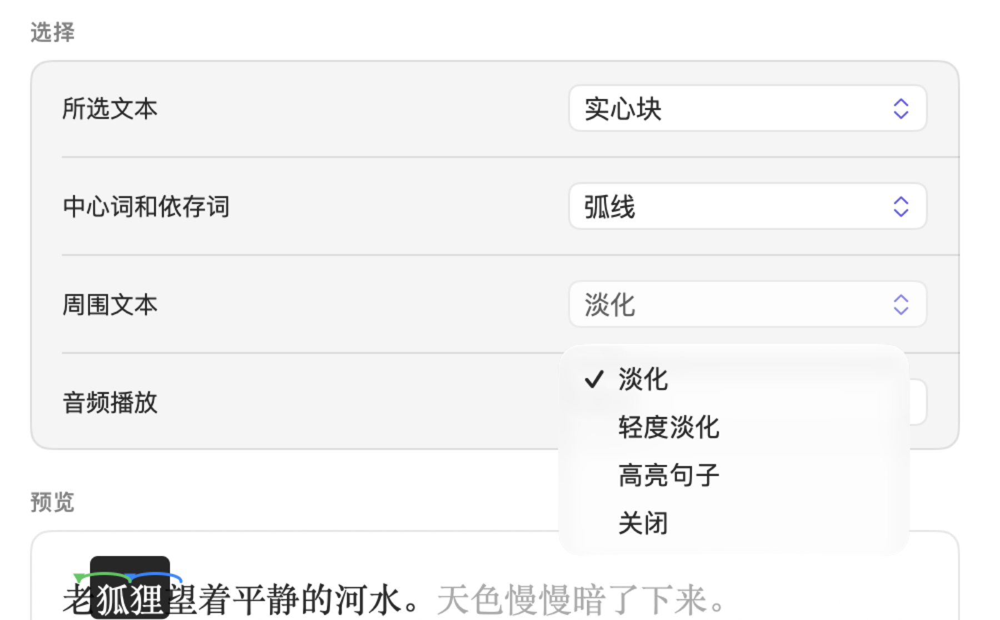
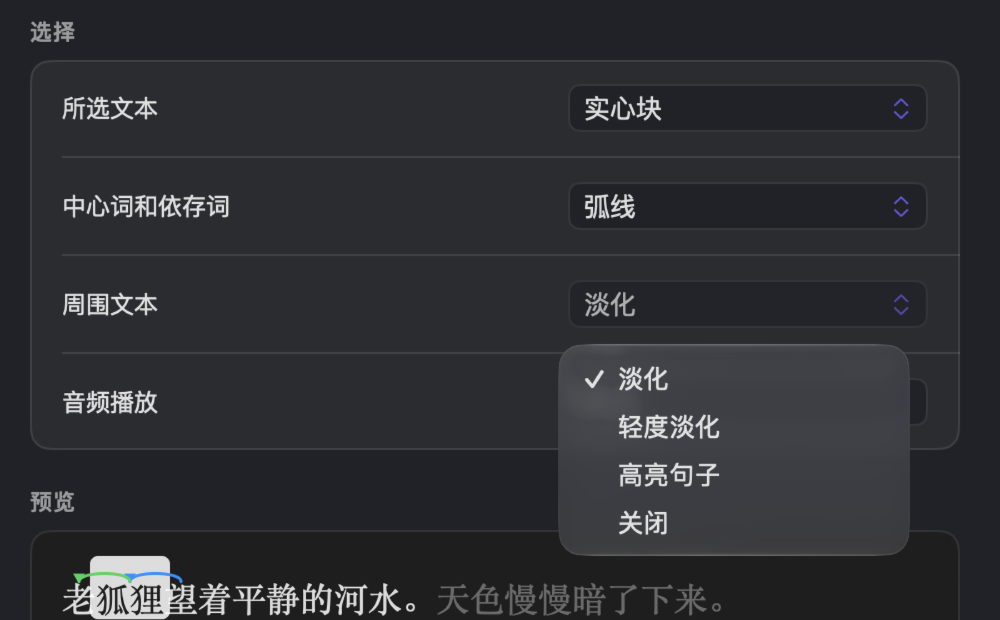
中心词和依存词在你选中单个词时起作用。中心词是当前这个词在句子语法结构中所从属的词，例如以所选词为主语的动词。一个词的依存词是所有依附于它的词。词与词之间的关系及其分类，详见第 11 章“语法检查器”。所有弧线、连线和标签都按语法功能透镜的默认颜色着色。
面板底部的预览显示的是老狐狸望着平静的河水。这句话，其中狐狸已选中。狐狸是望的主语，所以望是狐狸的中心词。狐狸的依存词是老。选择标签时，预览会在望的上方显示 ▲ nsubj（名词性主语），在老的上方显示 amod（形容词修饰语）。标签表示每个词与狐狸之间的语法功能关系，▲ 表示中心词。德语文档使用另一套标签，例如 nsubj 变为 sb。
周围文本还决定你跳转到某段文字时它如何显示，例如从查询命中跳转过去时。选择轻度淡化或淡化时，周围的文本会变淡；选择高亮句子或关闭时，这段文字则改为以浅黄色高亮。
音频播放只在阅读器跟随录音时起作用，也就是播放栏中的随音频滚动处于打开状态时（见第 5 章“阅读与编辑”中的跟随转写文本）。聚光让其余文本变淡的程度取决于周围文本的设置。选择轻度淡化时变淡得少一些，选择其他选项时与淡化的程度相同。
预览
面板底部是预览，它按你的偏好（字体、文字大小和主题）显示两段简短的文本。第一段包含一个选中的词，以及它的中心词和所有依存词。第二段显示文本在播放时的样子。你更改上方各行时，两段文本都会随之变化；它们的文字使用界面语言。
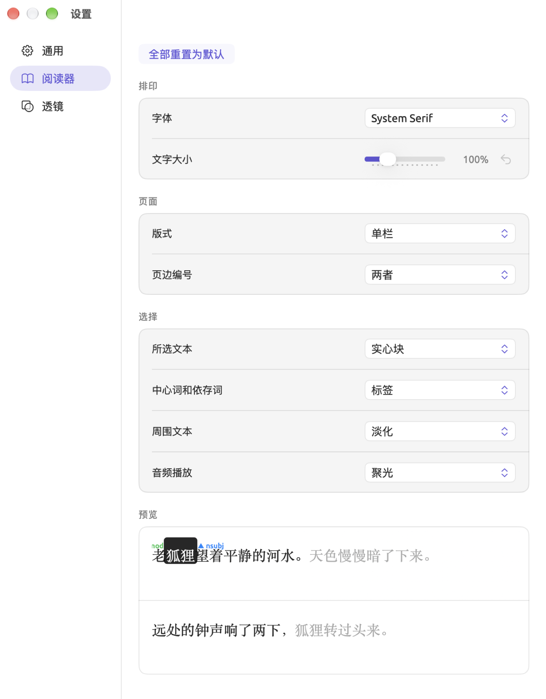
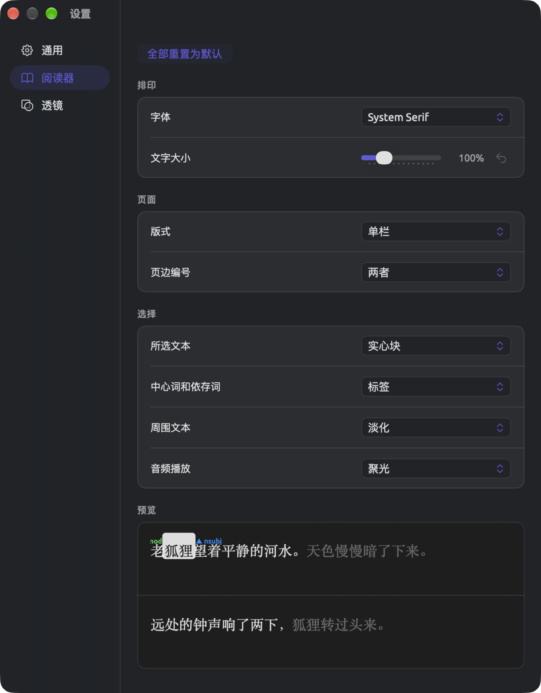
透镜面板
透镜按某种分类标注文档中的词，例如按词类分类（见第 6 章“透镜”）。标注项是一个透镜中的各个类别，例如词类中的名词。透镜面板用来设置四个内置透镜中每个标注项的颜色和样式。如果两个标注项看起来很相似，或者你要同时使用多个透镜，这个面板就很有用。
透镜面板为这四个透镜各设一个部分：
| 部分 | 行 | 初始样式 |
|---|---|---|
| 词类 | 名词、动词、形容词、副词、代词、限定词、介词、连词、数词、感叹词 | 下划线 |
| 语法功能 | 主语、宾语、表语、补语、定语、状语、同位语、施事、并列项、连接词 | 下划线 |
| 短语 | 名词短语、动词短语、介词短语、形容词短语、副词短语、连词短语、感叹词、名词组块 | 高亮 |
| 形态学 | 20 行，每行以一项特征及其一个取值命名，从时态：过去时到性：中性 | 高亮 |
形态学的各行涉及时态、数、级、动词形式、格、语气和性。形态学透镜适用于英语和德语文档，但格、语气和性只出现在德语文档中。每个词只显示一项形态特征，因此处于与格的德语名词只显示格：与格。更多内容见第 6 章“透镜”中的形态学。
相比之下，其他内置透镜（例如情态和衔接）使用预先设定的颜色。词典透镜、查询透镜和分析器透镜的颜色则分别来自对应的词典、查询和分析器。
每一行都有标注项的名称、样式菜单和颜色池；标注项被修改后，行中还会出现一个重置按钮。样式菜单提供四种样式，每种都带有相应的图标。
| 样式 | 标注的词的外观 |
|---|---|
| 高亮 | 词的后面衬一条该颜色的浅色色带 |
| 下划线 | 词的下面有一条该颜色的线 |
| 文本颜色 | 文字显示为该颜色 |
| 粗体 | 文字以该颜色的粗体显示 |
颜色是否足够醒目，取决于样式本身。高亮只在背景上铺一层淡淡的颜色，较浅的颜色未必看得出来。文本颜色和粗体直接用这种颜色显示文字本身，因此这种颜色需要与主题的背景色形成鲜明对比。另见第 6 章“透镜”中的透镜的颜色与样式。
更改标注项
示例项目中有“时间不多了 (英语)”，即“时间不多了”的英文译本。它适合用来观察过去时，也就是英语中 was、told 这类表示过去的动词形式。如果还没有导入“气候辩论”，请通过文件 ▸ 导入 ▸ 示例项目导入。在形态学透镜中，每一项特征起初都显示为浅色高亮。要让过去时与其他特征区分开，请按以下步骤操作：
- 选取 LemmaLoom ▸ 设置…（⌘,），然后点按透镜。
- 向下滚动到形态学部分，找到时态：过去时这一行。
- 打开它的样式菜单（当前显示高亮），选取粗体。
- 点按旁边的颜色池（那个色块）。在打开的 macOS 颜色选取器中，选择一种深红色。
- 打开“时间不多了 (英语)”，在透镜菜单中启用形态学（见第 6 章“透镜”中的透镜菜单）。
现在，过去时的词显示为深红色粗体，其他特征仍是浅色高亮。对词类、语法功能和短语标注项的更改同样适用于术语表（帮助 ▸ 术语表），因为术语表中代表这些标注项的每个标记或术语，都以该标注项的颜色和样式显示。文本上方的图例项保持默认颜色不变，所以时态：过去时图例项仍是紫色。这四个透镜的任何标注项都可以按同样的步骤更改。
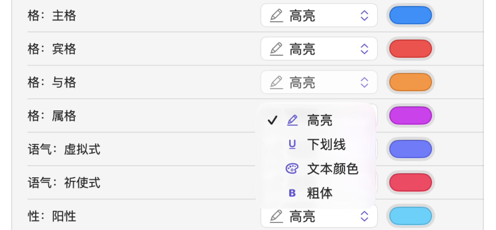
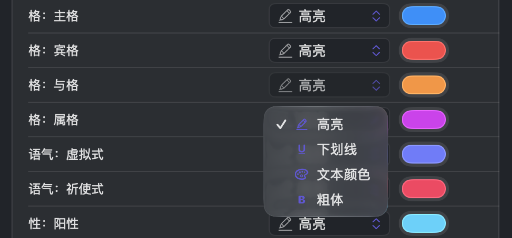
恢复默认设置
修改过的标注项在行末会出现一个重置按钮，形状是一个弯箭头。点按这个按钮，标注项就会恢复默认的颜色和样式。
面板最上方的全部重置为默认会重置全部四个透镜的所有标注项。这项重置是永久性的。
设置保存在哪里
你在设置窗口中所做的任何更改，只作用于你正在使用的这台 Mac。保存项目的资料库（见第 2 章“开始使用”中的工作保存在哪里）还会记住你在每个项目中的位置。
| 设置 | 保存位置 |
|---|---|
| 你在设置窗口中所做的一切选择 | 这台 Mac 上 |
| 随音频滚动、视频的大小和位置，以及视频是否折叠 | 这台 Mac 上 |
| 分屏浏览中两个文档之间的分隔条、分析面板内部的分隔条（例如查询构建器与结果之间的那一条），以及词汇速写的显示方式 | 这台 Mac 上 |
| 收藏的项目、你打开的项目、每个项目打开的标签页，以及每个文档的阅读位置、透镜和检查器（是否显示、宽度以及当前标签页） | 资料库中 |
你的项目，连同收藏、打开的标签页和阅读位置，都可以随资料库转移到另一台 Mac 上，也可以从较早的备份副本中恢复。设置则是每台 Mac 各自独立的，所以如果希望各台 Mac 一致，就需要在每台 Mac 上分别选择主题、字体和透镜样式等设置。
同事查看你的 LemmaLoom 归档或 REFI-QDA 项目时，所有内容都按对方 Mac 上的设置显示，也就是说，文档的外观取决于对方的主题、字体和透镜样式（见第 22 章“交换与导出”）。